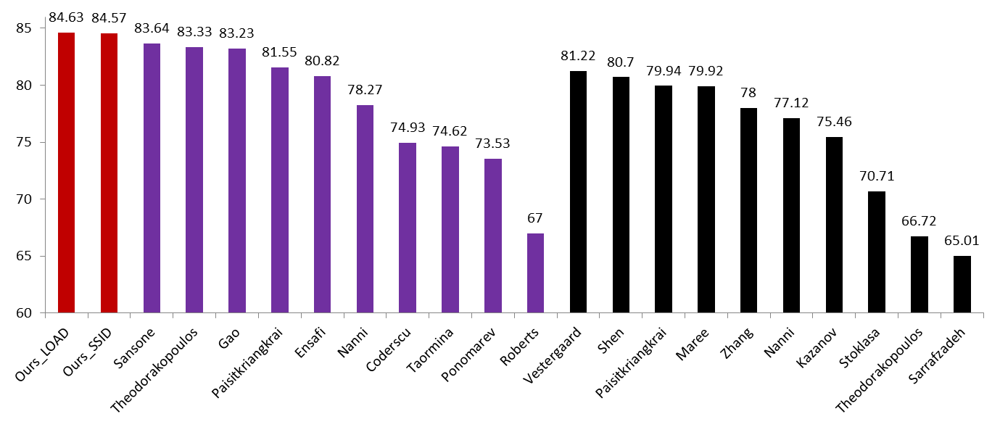

Exploring Illumination Invariant Descriptors for Human Epithelial Type 2 Cell Classification
Xianbiao Qi, Guoying Zhao, Matti Pietikainen,
Oulu University, Finland
In this paper, we deeply explore discriminative and illumination invariant descriptors for the Human Epithelial Type 2 (HEp-2) cell classification. We propose a novel Spatial Shape Index Descriptor (SSID) to capture spatial layout information of the second-order structures, and utilize a Local Orientation Adaptive Descriptor (LOAD) that is firstly designed for texture classification to the HEp-2 cell classification task. The complementarity of these two features are also studied. We design four different sets of experiments to evaluate the SSID, the LOAD and the combination of them.
Two submissions to the the Executable Thematic on Pattern Recognition Techniques for Indirect Immunofluorescence images analysis both achieved superior performance. Compared to the first place method of the ICPR 2014 HEp-2 cell classification contest that combined four types of features, both of our submissions outperformed it with only one type of feature under the Leave-One-Out-Specimen evaluation. Meanwhile, we evaluated our features on a newly created large-scale HEp-2 data set and the achieved superior performance further validated the effectiveness of our features.

LOAD Evaluation SSID Evaluation Shape Index Histogram Evaluation